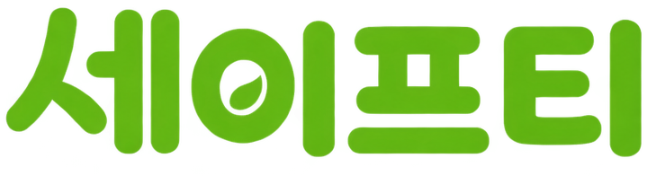

REPORT
우리동네 위험 구간을 제보해주세요!
메인 서비스
camera_enhance
안심 산책로 길안내
안전하고 재밌는 길안내
wb_twilight
10초 사진 제보
AI 기술을 활용한 빠른 제보 처리
accessible_forward
커뮤니티
사람들과 소통하는 공간
precision_manufacturing
포인트 사용 가능처
제보 접수 후 포인트 지급
photo_camera
10초제보
map
안전지도
home
홈
group
커뮤니티
person
마이
로그인 후 이용해주세요